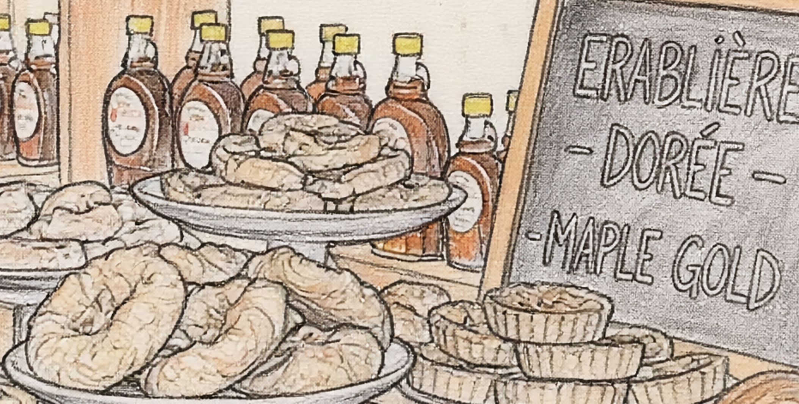

MaPastry is a café experience inspired by one of Canada’s most iconic ingredients — maple syrup. Our chain of cafés specializes in handcrafted pastries where maple syrup is not just an ingredient, but the heart of every creation. From flaky maple croissants to rich maple cheesecakes, our menu celebrates sweetness rooted in tradition. Beyond pastries, MaPastry offers a selection of classic Canadian desserts and warm beverages, including freshly brewed coffee and tea. Every product is prepared to reflect comfort, quality, and cultural pride. Whether guests visit our cafés in person or order delivery, we aim to create moments that feel both cozy and meaningful.